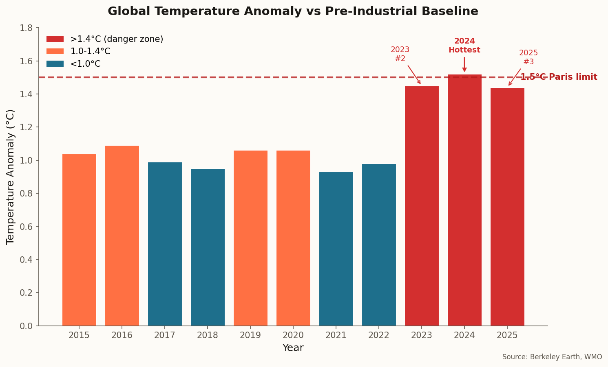
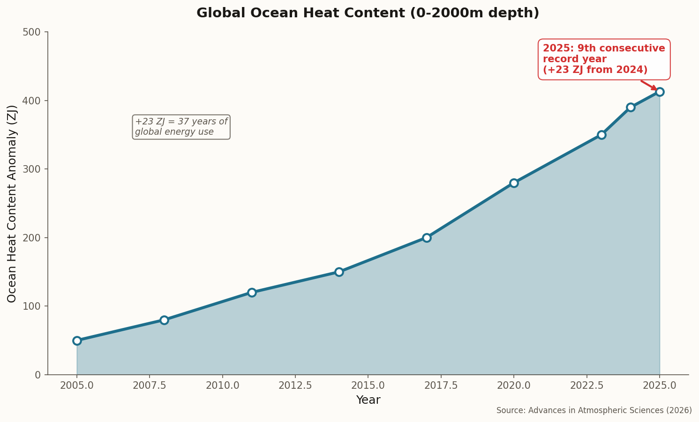
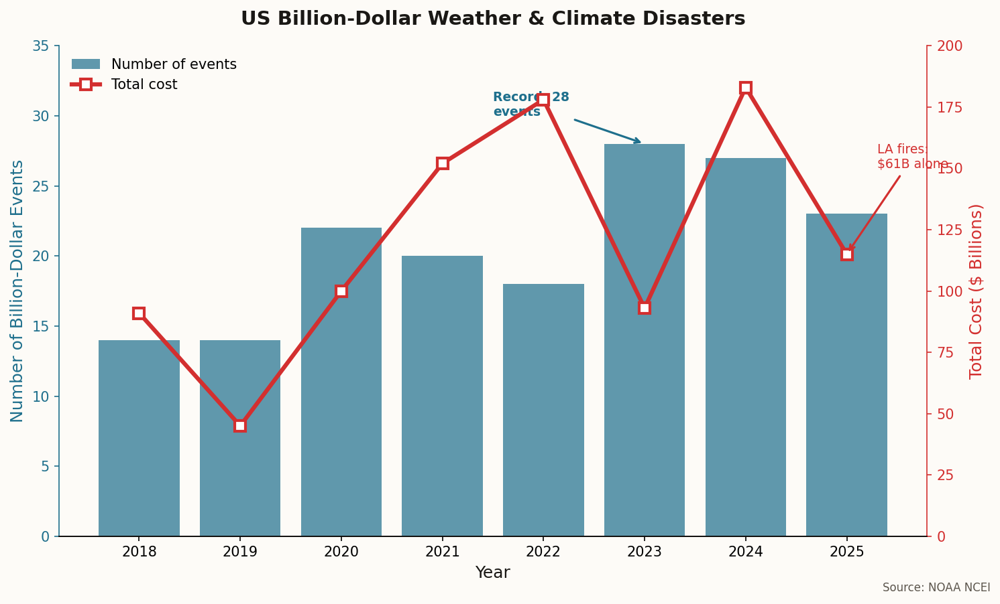

01
The Three-Year Threshold
Six of eight global climate monitoring agencies ranked 2025 as the third-hottest year on record. Two others—NASA and a joint American-British team—said it essentially tied with 2023 for second place. The difference: 0.02°C.
But here's what matters: the last three years have been the planet's three hottest in recorded history. And together, they represent the first three-year period in which average global temperatures exceeded 1.5°C above pre-industrial levels—the limit governments pledged to avoid under the Paris Agreement.
11
Hottest years in a row

The last three years clustered near the 1.5°C Paris limit
"The last three years are indicative of an acceleration in the warming. They're not consistent with the linear trend that we've been observing for the 50 years before that."
— Robert Rohde, Chief Scientist, Berkeley Earth
The 1.5°C goal was set in Paris in 2015. Scientists now say it could be permanently breached by 2030—a full decade earlier than predicted when the agreement was signed.
02
The Ocean's Breaking Point
While atmospheric temperatures grabbed headlines, the oceans quietly absorbed a staggering amount of heat. According to a study published in Advances in Atmospheric Sciences, global ocean heat content (0-2000m depth) increased by approximately 23 Zettajoules in 2025—equivalent to 37 years of global energy consumption.
It was the ninth consecutive year the ocean heat record was broken.

Ocean heat content has risen relentlessly for nearly two decades
Why it matters: Hotter oceans fuel stronger hurricanes, intensify marine heatwaves, bleach coral reefs, and drive sea level rise. The ocean has absorbed about 90% of the excess heat trapped by greenhouse gases—it's been buffering us from the worst. That buffer is filling up.
The "10 New Insights in Climate Science 2025/2026" report, released this month, called out the unprecedented pace of ocean surface warming: marine heatwaves are intensifying, driving severe ecological losses and weakening the ocean's role as a carbon sink.
Tropical oceans, the South Atlantic, the Mediterranean, the northern Indian Ocean, and the Southern Ocean all absorbed record heat in 2025. Warm-water coral reefs are now past their tipping point—80% experienced unprecedented heat waves, bleaching events, and die-offs.
03
The Ice Sheet Reckoning
A May 2025 study in Nature Communications Earth & Environment delivered a sobering message: 1.5°C is too high for polar ice sheets. Even current forcing (+1.2°C), if sustained, is likely to generate several meters of sea-level rise over coming centuries. A "safe" global temperature may be closer to +1°C—a threshold we passed years ago.
Critical thresholds: Just 2°C of additional warming could trigger irreversible collapse of the Greenland Ice Sheet, raising sea levels by 7 meters (23 feet). Some West Antarctic catchments continue losing mass even when melting is reduced to zero—suggesting a tipping point has already been crossed.
2025 marked the 29th consecutive year Greenland lost more ice than it gained. Arctic surface temperatures from October 2024 through September 2025 were the warmest on record since 1900, with the last 10 years representing the 10 warmest Arctic years ever observed.
Scientists have identified three instability mechanisms that could accelerate ice loss: marine ice sheet instability (already underway in West Antarctica), marine ice cliff instability, and surface elevation melt instability. Satellite observations show Pine Island and Thwaites glaciers retreating, thinning, and accelerating toward the ocean.
"The initiation of at least partial collapse of the West Antarctic Ice Sheet is almost inevitable this century, even if it has not already been triggered."
— 10 New Insights in Climate Science 2025/2026
04
The Attribution Revolution
When the Palisades and Eaton wildfires erupted in Los Angeles on January 7, 2025, they became the most destructive in Southern California's history—and the costliest wildfires on record at $61.2 billion in damages. Within days, World Weather Attribution had an answer: climate change made the conditions 35% more likely than they would have been before industrial warming.
The analysis also found drought conditions in the region are now 2.4 times more likely than in a pre-industrial climate. Nearly three dozen researchers across the globe contributed to the rapid attribution study.

US billion-dollar weather disasters have become the norm
Extreme weather attribution is becoming faster and more precise. A new study in Nature Climate Change found that when people are informed about the climate link to specific disasters, their support for climate policy increases significantly—regardless of political affiliation.
The 2025 toll extends far beyond LA: a record number of flash flood warnings in the US (including July floods in Texas that killed 135 people), and floods across South and Southeast Asia that claimed 1,800 lives and caused $25 billion in damages.
05
The Insurance Exodus
Natural disasters caused $224 billion in global damages in 2025, with insurers covering $108 billion. That makes it another year in a growing list where insured losses exceeded $100 billion.
90%
US share of insured loss
Since 1980, the US has sustained 426 billion-dollar weather and climate disasters, with a cumulative cost exceeding $3.1 trillion. The rate is accelerating: 2023 saw a record 28 billion-dollar events, 2024 had 27, and 2025 recorded 23.
The insurance industry is responding by retreating. State Farm and Allstate have stopped writing new policies in California and Florida. When California's one-year moratorium on policy cancellations expires in January 2026, the exodus is expected to accelerate.
The protection gap: UN estimates suggest climate-driven uninsured losses could double to $560 billion by 2030. The Network for Greening the Financial System projects economic losses could reach 15% of global GDP by 2050 under 2°C warming—three times larger than earlier estimates.
06
The Technology Response
Carbon capture is scaling, but slowly. By 2026, over 20 direct air capture (DAC) facilities operate worldwide. Leading projects now capture CO2 for under $300 per ton—a sharp drop from early pilots. Climeworks will deliver over 50,000 tons of verified carbon removal credits this year, with buyers including Stripe and Schneider Electric paying $600-800 per ton.
GE Vernova is launching a 1,500-tonne commercial DAC unit in 2026, designed to scale to 50,000 tonnes and beyond. Project Greensand in Denmark and Stratos in Texas (the world's largest DAC facility) are set to begin commercial operations.
But the sector faces headwinds. Two major DAC projects that received $1.2 billion from the Biden administration's DOE appeared on a leaked list of grant cancellations. One industry advisor warned: "If growth continues at a slow pace, it will get harder for startups to raise funding. I would expect quite a few companies to go out of business in 2026."
Meanwhile, Finnish researchers discovered a new compound—TBN combined with benzyl alcohol—that captures CO2 from ambient air without reacting with other atmospheric gases. It's still at laboratory scale, but represents the kind of breakthrough needed for affordable atmospheric carbon removal.
The "10 New Insights" report emphasized that carbon dioxide removal must complement, not substitute for, rapid emissions cuts. The climate math is unforgiving: we can't capture our way out of the hole we keep digging deeper.
07
What Comes Next
NOAA gives less than a 1% chance that 2026 will surpass 2024 as the hottest year on record, with a 75% chance of being a top-five hottest year. Berkeley Earth expects temperatures similar to 2025, perhaps ranking fourth overall, as La Niña transitions to neutral conditions.
But Carlo Buontempo, director of Copernicus' climate service, notes that when the next El Niño materializes—likely within two years—it will probably drive another record annual temperature.
The cascade risk: A 2022 study in Science found that exceeding 1.5°C could trigger multiple tipping points simultaneously: ice sheet collapse, abrupt permafrost thaw, coral die-off, and potential cascade effects. Like dominoes, the climate changes accompanying an AMOC collapse could worsen Amazon drought and accelerate Antarctic ice loss.
The last three years aren't an aberration. They're a warning shot—a glimpse of the new normal if emissions continue unabated. The 2025/2026 "10 New Insights" report puts it starkly: the failure to cut emissions at the speed and scale required is behind nearly every major climate risk we now face.
The physics hasn't changed. The atmosphere and oceans don't negotiate. They just keep score.